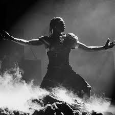
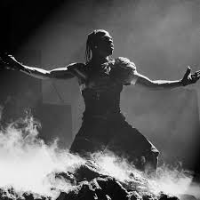

Early Life of Travis Scott
Jacques Webster II was born on April 30, 1991, in Houston, Texas. From ages one through six, Webster lived with his grandmother in South Park, Houston. He moved to Missouri City to live with his parents. Webster attended Elkins High School and graduated at seventeen. He then attended the University of Texas at San Antonio before dropping out to pursue music.
Successful Career of Travis Scott
He first gained attention in the early 2010s with the release of his mixtapes Owl Pharaoh (2013) and Days Before Rodeo (2014). His debut studio album, Rodeo, was released in 2015 and featured the hit single "Antidote," which catapulted him to mainstream success. Scott's subsequent albums, including Birds in the Trap Sing McKnight (2016) and Astroworld (2018), further solidified his status as a leading figure in contemporary music. Astroworld was particularly successful, earning critical acclaim and producing the chart-topping single "Sicko Mode." In addition to his music, Scott is known for his high-energy performances and collaborations across fashion and entertainment industries.
Travis Scott's Discography
- Owl Pharaoh (2013)
- Days Before Rodeo (2014)
- Rodeo (2015)
- Birds in the Trap Sing McKnight (2016)
- Huncho Jack, Jack Huncho (2017)
- Astroworld (2018)
- Jackboys (2019)
- Utopia (2023)
Popular Brand Collaborations
- Nike
- McDonalds
- Fortnite
- Dior
- Reese's Puffs
Gallery
 


Explore More!
Check out Travis Scott's Official Instagram for updates on his music, fashion, and lifestyle: Travis Scott's Instagram.
Watch the music video from his latest album Utopia: Travis Scott - Utopia Music Video.